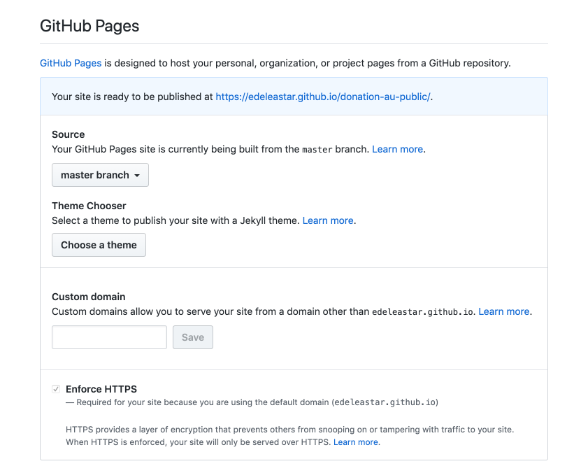
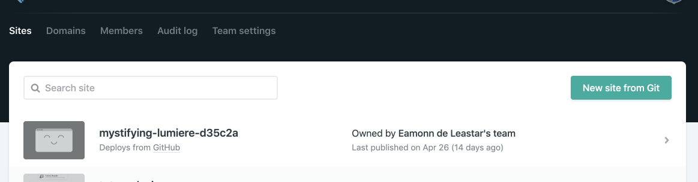
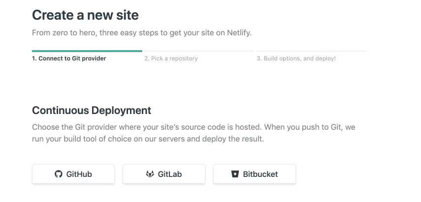
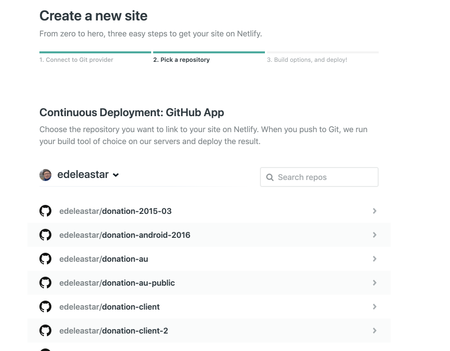
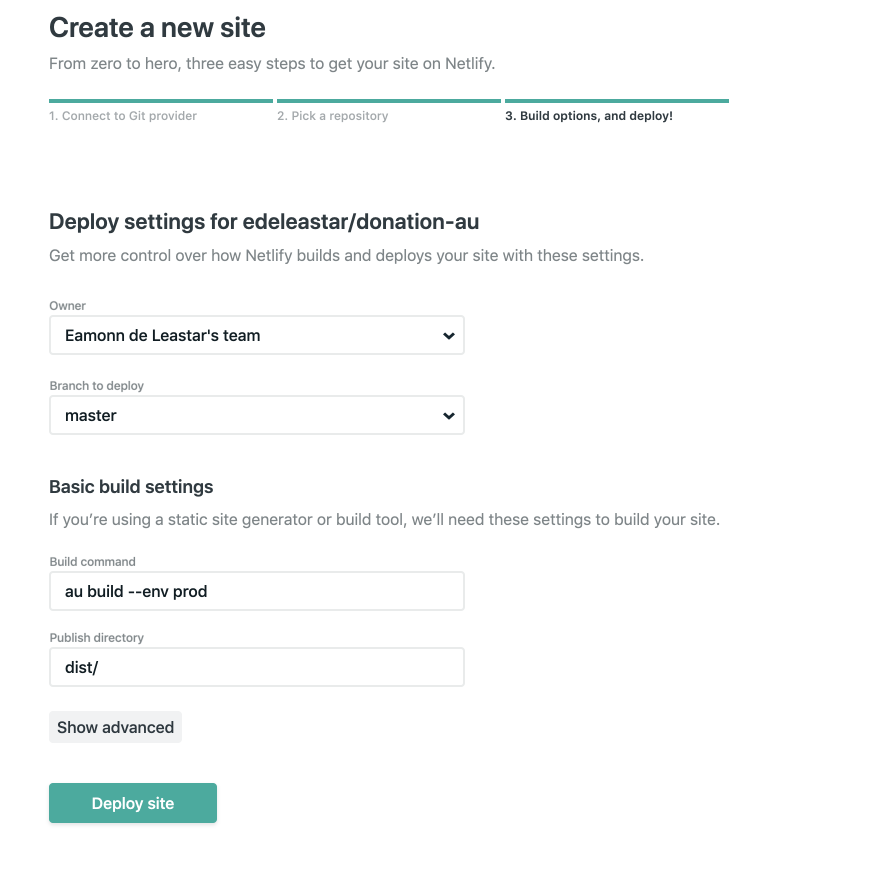
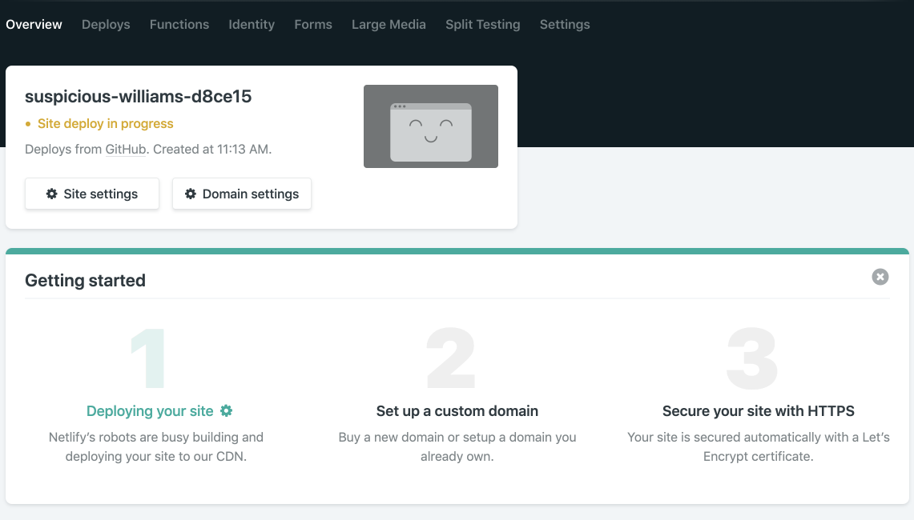
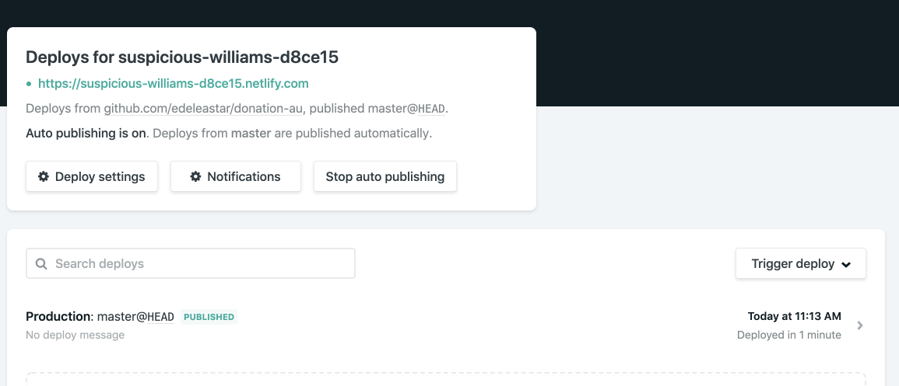

How to deploy Aurelia Applications using three alternative services: surge, ghpages & netlify
The Aurelia application must first be packaged before it can be deployed. This is accomplished by the following command in the project folder
au build --env prodThis will generate a bundled version of the application into the dist folder:
├── api
│ ├── candidates.json
│ └── users.json
├── app~d0ae3f07.2793baf08a9a22421429.bundle.map
├── app~d0ae3f07.2793baf08a9a22421429.chunk.js
├── favicon.ico
├── images
│ ├── homer.png
│ ├── homer2.png
│ ├── homer3.png
│ ├── homer4.jpeg
│ └── homer5.jpg
├── index.html
├── runtime~app.b2d3e66e89272a858ca8.bundle.js
├── runtime~app.b2d3e66e89272a858ca8.bundle.map
├── t.md
├── vendors~0ba1d959.12dea193dd3a663892d0.bundle.map
├── vendors~0ba1d959.12dea193dd3a663892d0.chunk.js
├── vendors~1ccf8e8a.03c9a2cfbe2062023289.bundle.map
├── vendors~1ccf8e8a.03c9a2cfbe2062023289.chunk.js
├── vendors~50e8d500.a78d1ba340a8a8bca5ef.bundle.map
├── vendors~50e8d500.a78d1ba340a8a8bca5ef.chunk.js
├── vendors~556c66f2.075eba2dd43a90fa85b0.bundle.map
├── vendors~556c66f2.075eba2dd43a90fa85b0.chunk.js
├── vendors~5ea1390f.26aeff0e7386d5e02152.bundle.map
├── vendors~5ea1390f.26aeff0e7386d5e02152.chunk.js
├── vendors~7274e1de.91d8884a0c7e8777691f.bundle.map
├── vendors~7274e1de.91d8884a0c7e8777691f.chunk.js
├── vendors~ecff2e3d.7490911918a92e3e1e1e.bundle.map
└── vendors~ecff2e3d.7490911918a92e3e1e1e.chunk.jsThis has been generated by Webpack - the default bundler employed by Aurelia.
The simplest deployment technique is surge:
You may have used this in the past.
Make sure to change the baseurl for the remote service to the deployed donation-web service before building and deploying:
@inject(HttpClient, EventAggregator, Aurelia, Router)
export class DonationService {
candidates: Candidate[] = [];
donations: Donation[] = [];
paymentMethods = ['Cash', 'Paypal'];
total = 0;
constructor(
private httpClient: HttpClient,
private ea: EventAggregator,
private au: Aurelia,
private router: Router
) {
httpClient.configure(http => {
// http.withBaseUrl('http://localhost:3000');
http.withBaseUrl('https://elated-mechanic-1.glitch.me');
});
}To deploy to surge - build the application to the dist folder
au build --env prodand simply run surge from the dist folder:
surge
Running as edeleastar@gmail.com (Student)
project: /Users/edeleastar/repos/modules/wit-hdip-comp-sci/ent-web-prj/donation-au/dist/
domain: slim-shame.surge.sh
upload: [====================] 100% eta: 0.0s (27 files, 1866280 bytes)
CDN: [====================] 100%
IP: 45.55.110.124
Success! - Published to slim-shame.surge.shThis should deploy the app to the generated url.
To republish to an app to the same url, which you will need to do on subsequent deploys, then specify the domain:
surge --domain slim-shame.surge.shAn alternative to surge is to use github pages:
This involves creating a new repo - and in the repo settings, enable GitHub pages on the master branch:

This will show you the deployed url (https://edeleastar.github.io/donation-au-public above).
Clone this new repo outside your aurelia app - NOT in the dist folder. We will then copy the bundled application (from the dist folder) into this repo, and push to github.
Deploying to github requires an one additional step not part of the surge work flow - the base url will need to be specified in webpack.config.js
By default is is:
const baseUrl = '/';Change to
const baseUrl = '/YOUR GITHUB REPO';In this example:
const baseUrl = '/donation-au-public/';Note that is is not the full url - just the repo.
After making this change, build the app:
au build --env prodCopy everything in 'dist' to the repo, commit and push. The app should now be deployed.
The final target is Netlify:
This platform is designed to specifically support static web site + Single Page Application, and includes elegant integration in into github.
Before using netlify - you will need to reverse the change you made in the last step:
const baseUrl = '/';Setting the baseUrl back to the root as shown above.
Back in netlify, start by creating a new application (new site from git):

Start by connecting to your netlify account to your github account:

Select a repository:

And connect to it. This time we are connecting to the Aurelia source (not the dist project as in the ghpages example) - and we will need to specify the build command:
au build --env prodThe deploy settings might look like this:

Press 'Deploy Site'

You should be able to navigate to review the deploy log:
If the deploy was successful - the url should now host the running Aurelia app:

Any push to the source repo will trigger a new deploy - you can also force a rebuild via the 'Trigger deploy' button.